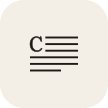

Carta
Your Android screen, as calm as a printed page.
Download APKCarta makes a phone look and feel closer to an e-ink reader. You pick the effects you want once; one tap in the app, or on the home screen widget, turns them all on and off together and puts your phone back exactly as it was.
Effects
- GrayscaleRemoves color from the whole screen, using Android's own color correction.
- Warm lightFilters out blue light: close to paper by day, warmer in the evening.
- Extra dimDims whites below the usual minimum brightness. Android 12+.
- Bold textFull, print-like letters everywhere. Android 12+.
- Still motionTurns off system animations, so screens change instantly.
- Paper textureA paper grain over every app and softened blacks, following the light/dark theme.
- Neutral wallpaperPaper-colored by day, ink by night. Your wallpaper is saved and restored.
Install
- Download the APK above and install it.
- Grant the system permission once, from a computer with adb and USB debugging enabled:
adb shell pm grant com.gregoriogalante.carta android.permission.WRITE_SECURE_SETTINGS - Open Carta and follow the Setup section for the texture service and file access.
Each permission only unlocks its own effects; skip any you do not need.
Privacy
Carta has no internet permission and collects nothing. The accessibility service only draws the texture above other apps: it does not read screen content and listens to no events.